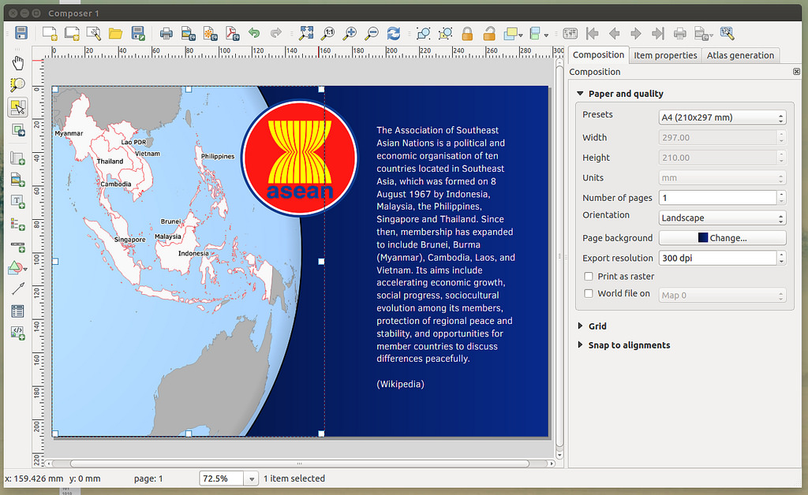
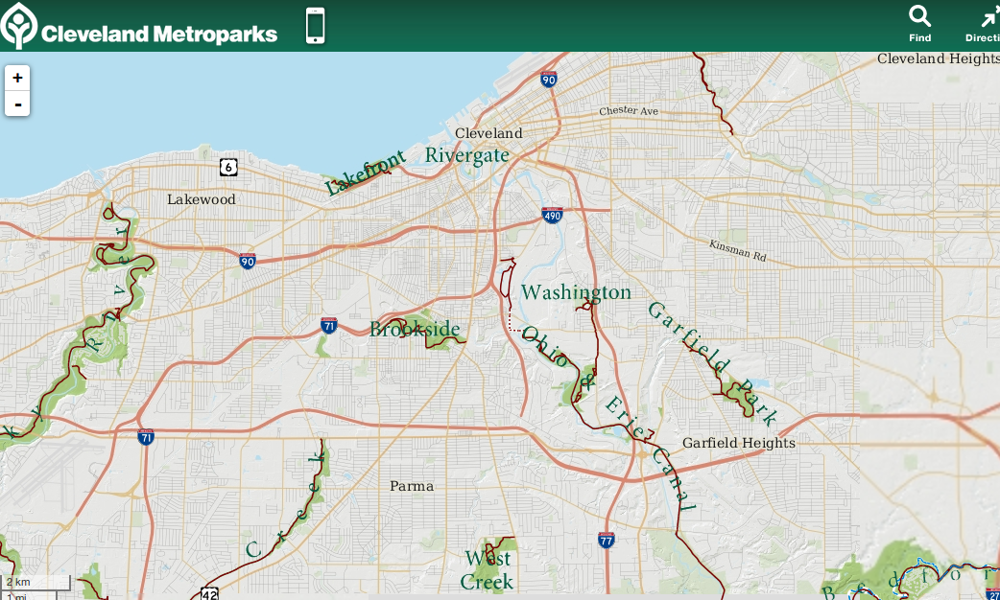
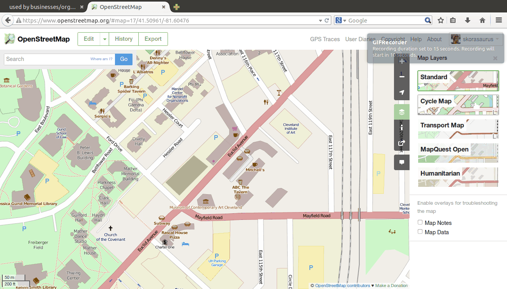
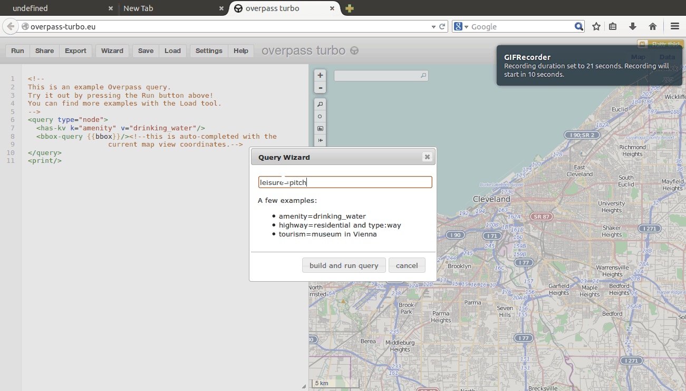
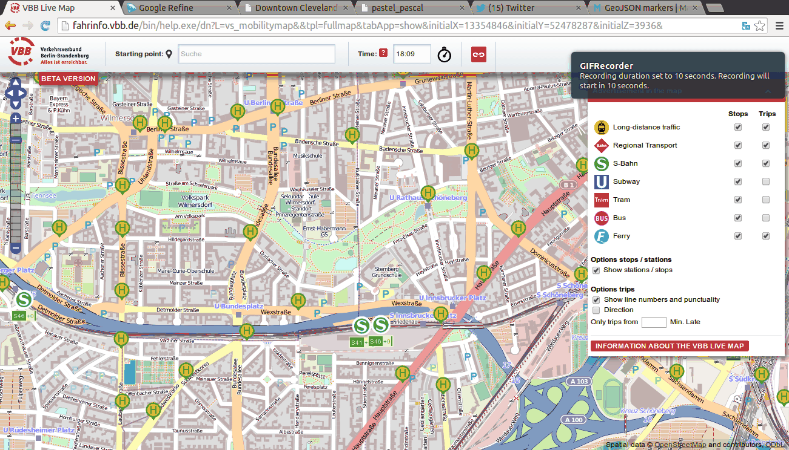
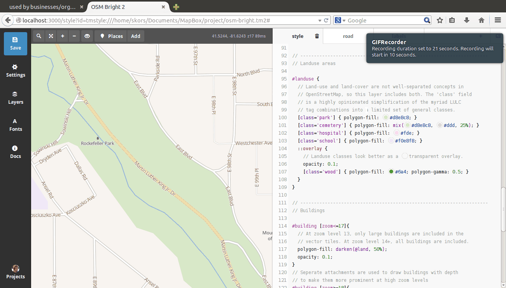
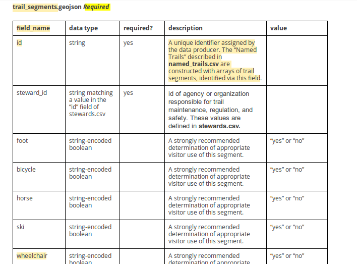
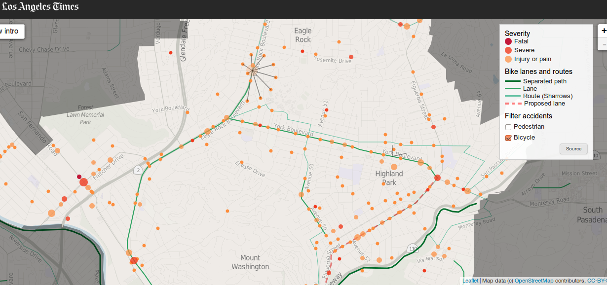

a brief update of open source geo tools and data! by Will Skora
no rasters, topology, only for small data sets
Web maps | Open Spec | machine readable | NO10CHARLIMIT
GeoJSON features need a type, geometry, and properties.
one file (contains CRS)
geojson.io
instantly shareable
geojson.io exports to SHP, (and CSV) oh my!
postGISpostgreSQL with geo
spatial database - conduct spatial and non-spatial queries
much smaller than SHPs
pgrouting!
ruh-roh, all these new formats?!
but there's QGIS!
available for Mac/Windows/Linux
and rasters oh my!
data editing, analysis, map compsition, and more

Plug-ins! written in python
less crashes
OpenStreetMap like wikipedia, but for google maps
liberal license (share-alike)
entire planet: 25GB (pbf)
used by businesses/orgs: foursquare, craigslist, flickr, pinterest, and ...

your updates to map > available to world in minutes


awesome examples of it in action

How do I get those purdy tiles?!
mapbox! Tilemill and Mapbox-Studio

d3 also for the webs
mapbox.js / leaflet
javascript library
chock full o' examples
Open Trails
emerging open data specification for trails
designed with OpenStreetMap in mind!

addresses. standardized.
find $10! (Lorain, Summit, Medina!)

with programming, no longer limited by the existing tools; but what you can create
image credits: Asean poster ( Mathieu Pellerin)
additional #maptime slides (alan, lyzi, mike)
Want to learn more and participate!?
Join #maptime and Open Geo Cleveland - @opengeocle
Thanks!